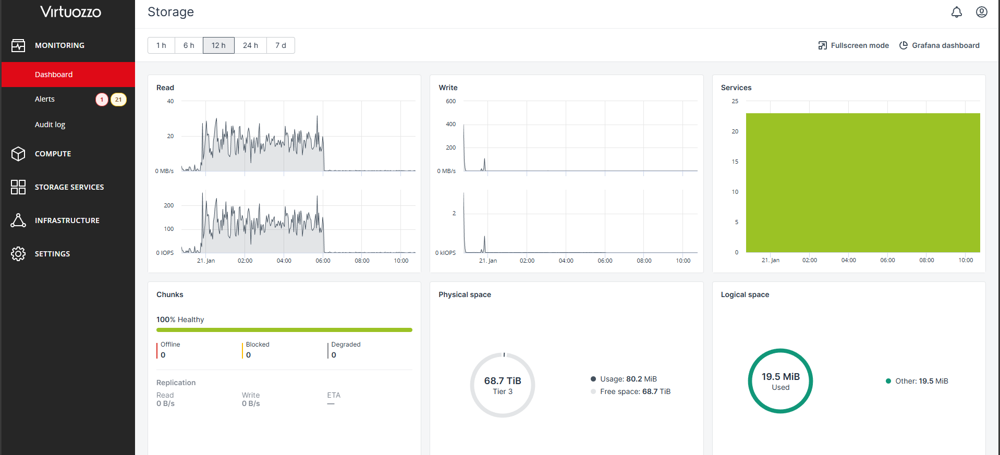
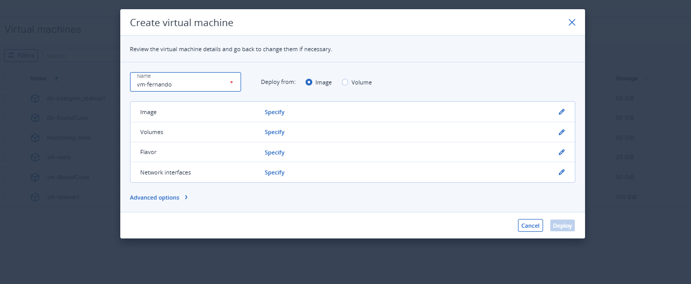

Implementasi Hyper-Converged Infrastructure (HCI) skala besar untuk arsitektur Public dan Private Cloud dengan backend OpenStack.


Proyek tingkat lanjut ini menuntut stabilitas tanpa kompromi. Tanggung jawab saya mencakup seluruh siklus *deployment* fisik di Data Center hingga penyediaan Self-Service Portal (SSP) agar klien B2B dapat melakukan instalasi instan (Auto-Provisioning) Virtual Machine mereka.
Uptime dijaga secara ketat melalui integrasi API ke OpManager dan ElasticFlow. Setiap anomali traffic (indikasi DDoS atau Hardware Failure) pada level *backend network* dapat terdeteksi dan diisolasi dengan cepat untuk melindungi *tenant* di klaster cloud tersebut.
Saya melakukan rekayasa (engineering) pada Image OS Linux (Ubuntu, CentOS) untuk mendukung fitur Cloud-Init. Hal ini memungkinkan sistem VHI menyuntikkan IP publik, SSH Keys, dan pengaturan partisi secara otomatis ke dalam VM baru, memangkas waktu operasional dari hitungan jam menjadi hitungan menit.